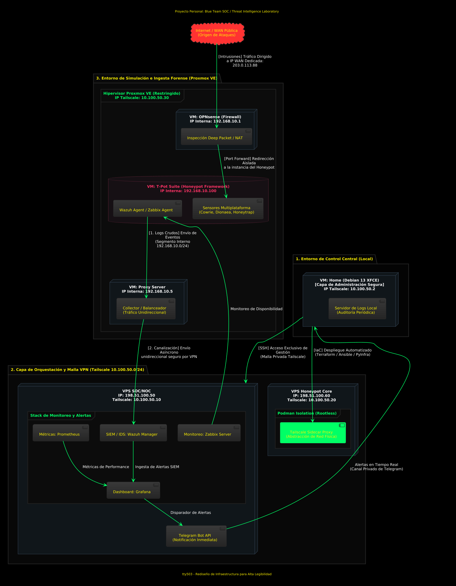
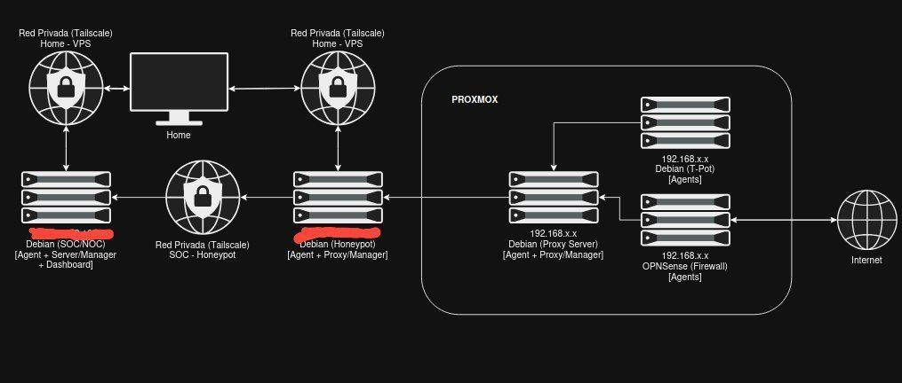

Laboratorio SOC/Honeypot: Arquitectura de Aislamiento, Automatización y Monitoreo en Tiempo Real
Documentación completa del diseño, despliegue y operación de un laboratorio personal de Blue Team y Threat Intelligence. Desde la virtualización con Proxmox y el enrutamiento con OPNsense hasta la automatización con Terraform y Ansible, pasando por el stack de monitoreo con Wazuh, Zabbix, Prometheus y Grafana, con alertas en tiempo real vía Telegram.
00. Propósito y Filosofía del Laboratorio
Este laboratorio nace de una necesidad concreta: disponer de un entorno controlado donde simular un Blue Team / SOC funcional, con capacidades de ingestión de logs, detección de intrusiones, honeypots activos y respuesta a incidentes. No es un entorno teórico: está desplegado, funcionando y generando alertas reales que llegan a mi Telegram.
La filosofía de diseño se resume en tres principios:
- Aislamiento estricto: Ningún servicio de administración queda expuesto a internet. Todo el acceso se realiza a través de una malla VPN privada con Tailscale.
- Infraestructura como Código (IaC): Cada componente del laboratorio está definido en Terraform y configurado con Ansible, garantizando reproducibilidad y documentación viva.
- Defensa en profundidad: Múltiples anillos de logs, contenedores sin privilegios, firewalls con DPI y segmentación de red para contener cualquier compromiso.
Skill: Arquitectura de Seguridad IaC (Terraform/Ansible) Virtualización (Proxmox) Monitoreo (Wazuh/Zabbix/Prometheus/Grafana)
01. Infraestructura Base: Home, SOC/NOC y Honeypot
VM Local "Home" — Centro de Control
Todo comienza en una máquina virtual local corriendo Debian 13 XFCE, bautizada como "Home". Desde aquí se administra la totalidad del laboratorio, pero con una restricción fundamental: ningún puerto de administración está expuesto a internet. La conexión hacia las VPS se realiza exclusivamente a través de la red privada de Tailscale.
| Recurso | Especificación |
|---|---|
| CPU | 4 Núcleos |
| RAM | 4 GB |
| Disco | 60 GB |
| Sistema Operativo | Debian 13 XFCE |
| IP Tailscale | 10.100.50.2 |
| Rol | Centro de control, despliegue IaC y revisión de logs |
VPS "SOC/NOC" — Cerebro de Monitoreo
La primera VPS, bautizada "SOC/NOC", es el cerebro del laboratorio. Aquí se centraliza todo el stack de monitoreo: Wazuh Manager para SIEM/IDS, Zabbix Server para monitoreo de disponibilidad, Prometheus para métricas y Grafana como dashboard unificado. Las alertas se disparan a través de la API de Telegram Bot.
VPS "Honeypot Core" — Señuelos Activos
La segunda VPS, "Honeypot Core", ejecuta el framework T-Pot con sensores multiplataforma (Cowrie, Dionaea, Honeytrap) y expone servicios señuelo a internet. El tráfico malicioso capturado se envía de forma unidireccional hacia el SOC/NOC para su análisis.
| VPS | IP Pública | IP Tailscale | CPU | RAM | Disco |
|---|---|---|---|---|---|
| SOC/NOC | 198.51.100.50 | 10.100.50.10 | 3 Núcleos | 8 GB | 150 GB SSD |
| Honeypot Core | 198.51.100.60 | 10.100.50.20 | 3 Núcleos | 8 GB | 150 GB SSD |
El tráfico entre las VPS está restringido a un solo sentido: desde Honeypot hacia SOC/NOC para el envío de logs. En sentido inverso no hay comunicación posible. Esto garantiza que, si el Honeypot es comprometido, el atacante no pueda pivotar hacia el SOC/NOC ni acceder a los logs históricos.
02. Conectividad: Tailscale como Tejido Conector
Tailscale es el componente que une todas las piezas del laboratorio en una malla privada. La red está definida sobre el segmento 10.100.50.0/24 y cada nodo recibe una IP fija dentro de este espacio.
Tailscale Sidecar Proxy con Podman Rootless
Un detalle crítico de la arquitectura es cómo se ejecuta Tailscale dentro de las VPS. En lugar de instalarlo directamente sobre el sistema operativo, corre dentro de un contenedor Podman en modo rootless, actuando como un sidecar proxy. Esto tiene varias ventajas:
- Abstracción de red: El contenedor oculta las direcciones IP reales de los servidores, incluso para los administradores. Nadie que se conecte a través de Tailscale ve la IP física de la VPS.
- Aislamiento de privilegios: Podman corre desde un usuario sin privilegios, sin acceso directo a la tarjeta de red real del host.
- Redirección interna: El contenedor sidecar trabaja desde la red privada del servidor y redirige el tráfico hacia los servicios correspondientes sin exponer las interfaces físicas.
Los administradores con menos privilegios se conectan a la instancia de Tailscale dentro de Podman, y esta los redirecciona a los servicios que necesitan usar. Solo ven un espacio aislado dentro de una red privada, sin acceso directo al sistema operativo subyacente.
03. Diagrama de Arquitectura Lógica
El siguiente diagrama —el plano maestro del laboratorio— muestra el flujo completo de datos, el direccionamiento IP y la interconexión de todos los componentes. Es el resultado de varias iteraciones de diseño y refleja el estado actual del despliegue.

Desglose del Diagrama
1. Entorno de Simulación e Ingesta Forense (Proxmox VE):
- Hipervisor Protegido: Proxmox VE bajo la IP de malla Tailscale 10.100.50.30.
- VM OPNsense (Firewall): IP interna 192.168.10.1. Recibe tráfico de internet por la IP WAN dedicada 203.0.113.88, realiza inspección profunda de paquetes (DPI), NAT y aplica Port Forward aislado hacia los señuelos.
- VM T-Pot Suite: IP interna 192.168.10.100. Corre sensores multiplataforma (Cowrie, Dionaea, Honeytrap) y agentes de Wazuh y Zabbix. Los logs crudos se envían al Proxy Server.
- VM Proxy Server: IP interna 192.168.10.5. Actúa como colector y balanceador unidireccional de tráfico para extraer los datos fuera del entorno de simulación hacia el SOC/NOC.
2. Capa de Orquestación y Malla VPN (Tailscale 10.100.50.0/24):
- VPS SOC/NOC: Recibe logs de forma asíncrona y unidireccional. Alberga Prometheus (métricas), Wazuh Manager (SIEM/IDS), Zabbix Server (disponibilidad) y Grafana (dashboard unificado). Las alertas se disparan hacia Telegram Bot API.
- VPS Honeypot Core: Mantiene aislamiento mediante contenedores Podman rootless y utiliza Tailscale Sidecar Proxy para abstraer la red física.
3. Entorno de Control Central (Local):
- VM Home: Centro de operaciones local. Administra la infraestructura usando IaC vía Terraform, Ansible y PyInfra. Conexión SSH exclusiva mediante la malla privada. Servidor de logs local para auditoría periódica.
04. Stack de Monitoreo y Alertas en Tiempo Real
El corazón del laboratorio es el stack de monitoreo desplegado en la VPS SOC/NOC. La combinación de Wazuh, Zabbix, Prometheus y Grafana proporciona una visibilidad completa del entorno, desde la detección de intrusiones hasta las métricas de rendimiento.
| Herramienta | Rol | Datos que Procesa |
|---|---|---|
| Wazuh Manager | SIEM / IDS | Eventos de seguridad, integridad de archivos, detección de anomalías |
| Zabbix Server | Monitoreo de Disponibilidad | Estado de servicios, consumo de recursos, uptime |
| Prometheus | Métricas de Rendimiento | CPU, memoria, disco, tráfico de red, contenedores |
| Grafana | Dashboard Unificado | Visualización de datos de Wazuh, Zabbix y Prometheus |
| Telegram Bot API | Alertas en Tiempo Real | Notificaciones de incidentes disparadas desde Grafana |
Validación en Vivo: Alerta de Apache Caído
La siguiente captura muestra el laboratorio en operación real, durante un incidente donde el servicio Apache cayó y fue recuperado automáticamente en 1 minuto:

La imagen muestra tres paneles simultáneos:
- Zabbix (izquierda): Métricas de memoria disponible (6.27 GB), escritura en disco (27.75 w/s) y gráfico de rendimiento de red/disco.
- Terminal (centro): Comando systemctl status apache2 mostrando el servicio activo tras recuperación.
- Telegram (derecha): Alerta con asunto {ALERT.SUBJECT}, problema "Apache: Service is down" iniciado a las 02:54:09, resuelto en 1 minuto.
05. Anillos de Logs: Defensa en Profundidad
La estrategia de logging está diseñada en anillos concéntricos, desde el nivel más externo (contenedores individuales) hasta el más interno (VPS completa). Esto garantiza que, incluso si un anillo falla o es comprometido, los demás siguen registrando.
Honeypot Core — 4 Anillos
- Contenedores de servicios (Podman): Logs de cada sensor del T-Pot y del contenedor Tailscale sidecar.
- Instancias de Proxmox: Logs de las VMs que corren dentro del hipervisor.
- Contenedor de Tailscale: Logs del proxy sidecar y del tráfico de red.
- VPS completa: Logs del sistema operativo, accesos SSH y eventos de seguridad.
SOC/NOC — 2 Anillos
- Contenedores de Tailscale y SOC/NOC: Logs del proxy y de los servicios de monitoreo.
- VPS completa: Logs del sistema operativo y eventos de seguridad.
Home — 1 Anillo (Auto-Hospedado)
- VM completa: Servidor de logs local para revisión periódica, sin dependencia de servicios externos.
El incidente de Oldsmar (2021) y el apagón de Ucrania (2015) demostraron que sin logs, la diferencia entre error técnico y ataque malicioso es imposible de establecer. Los anillos de logs de este laboratorio están diseñados precisamente para que esa distinción siempre sea posible. Si un servicio falla, sé exactamente qué anillo registrará el evento y puedo trazarlo hasta su origen.
06. Automatización del Despliegue: IaC con Terraform, Ansible y PyInfra
Uno de los pilares del laboratorio es la Infraestructura como Código (IaC). Cada componente está definido en archivos de configuración versionables, lo que permite recrear el entorno completo desde cero en cuestión de minutos.
| Herramienta | Propósito | Cuándo se Usa |
|---|---|---|
| Terraform | Provisión de infraestructura | Crear servidores, redes y reglas de firewall. Usa el provider de Contabo para gestionar las VPS. |
| Ansible | Configuración y despliegue | Instalar y configurar software, ajustar permisos y configurar AppArmor una vez que el servidor está listo. |
| PyInfra | Alternativa a Ansible | Debugging en tiempo real durante la configuración. Compatible con scripts Python nativos. |
| Mitogen Library | Ejecución remota eficiente | Scripts de monitoreo que se ejecutan en el host remoto sin conexión SSH persistente. |
| Hashicorp Vault | Gestión de secretos | Protección de tokens, contraseñas y datos confidenciales para aplicaciones autorizadas. |
API de Contabo para Gestión en Tiempo Real
Un detalle importante es el uso de la API de Contabo para gestionar la VPS Honeypot desde el SOC/NOC. Esto permite:
- Tomar snapshots del estado actual antes de cualquier cambio.
- Reinstalar la VPS desde cero si se detecta un compromiso.
- Apagar el servidor en caso de emergencia, todo desde scripts automatizados.
IPs Adicionales para Segmentación de Servicios
Los servicios que se exponen a internet —como los señuelos del Honeypot— tienen su propia IP adicional asignada, distinta de la IP de administración de la VPS. Esto permite segmentar el tráfico y separar completamente la superficie de ataque de la infraestructura de gestión.
07. Borrador de Alto Nivel: La Versión Preliminar
El siguiente diagrama es la versión preliminar —el "borrador" estructural— que sirvió como punto de partida para el diseño final. Muestra la relación directa entre los componentes sin el detalle de direccionamiento IP.

Este borrador fue fundamental para planificar los segmentos de Tailscale y la encapsulación de las máquinas virtuales dentro de Proxmox antes de pasar al diseño detallado del diagrama lógico principal.
08. Lecciones Aprendidas y Próximos Pasos
Lo que este laboratorio me ha enseñado
- Tailscale simplifica lo complejo: Montar una malla VPN con acceso segmentado y sidecar proxies habría sido un proyecto en sí mismo sin esta herramienta. La facilidad de configuración no sacrifica la seguridad si se implementa con contenedores rootless.
- Podman rootless no es un lujo: Ejecutar Tailscale desde un contenedor sin privilegios añade una capa de aislamiento que puede marcar la diferencia en caso de compromiso del proxy.
- IaC es documentación viva: Los archivos de Terraform y Ansible son la mejor documentación posible: siempre están actualizados porque son lo que se ejecuta.
- Los anillos de logs no son opcionales: En entornos reales, depender de un solo punto de logging es una receta para el desastre forense. La redundancia en la captura de eventos es inversión, no gasto.
- Alertas en tiempo real cierran el bucle: Tener Grafana con dashboards bonitos no sirve de nada si nadie mira la pantalla. Las alertas por Telegram garantizan que los incidentes se detecten aunque no esté frente al monitor.
Próximos pasos
- Implementar Hashicorp Vault para centralizar la gestión de secretos y tokens.
- Migrar los playbooks de Ansible a Mitogen para acelerar la ejecución remota.
- Añadir Canarytokens como señuelos adicionales en la red interna.
- Documentar el proceso de respuesta a incidentes simulado desde la detección en Grafana hasta la contención.
- Explorar la integración de MISP para threat intelligence compartido.
Las direcciones IP públicas mostradas en este artículo (198.51.100.x, 203.0.113.88) son direcciones de documentación según RFC 5737 y no corresponden a la infraestructura real. Los nombres de servidor reales están censurados en los diagramas.
09. Referencias y Enlaces
- Post original: Arquitectura y despliegue de Laboratorio SOC Automatizado (LinkedIn)
- Post original: Sensores Defensivos: Honeypots y Canarytokens (LinkedIn)
- Proxmox VE — Virtualization Platform
- OPNsense — Open Source Firewall
- Tailscale — Zero Trust VPN Mesh
- Podman — Rootless Container Management
- Terraform — Infrastructure as Code
- Ansible — Automation Platform